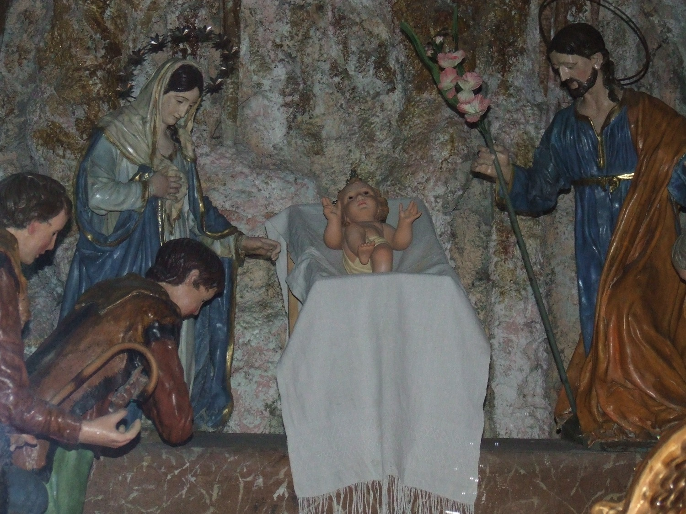

Aquest Naixement, considerat una de les grans obres del neoclassicisme religiós mallorquí, és obra de l’artista català Adrià Ferran, datada devers 1824. Consta de cinc figures: la Verge Maria, sant Josep, el Nin Jesús i dos pastors. La gruta de pedra que l’acull és de mitjan segle XX.
En aquest conjunt, sant Josep hi és representat amb un dels seus atributs més característics: una vara florida, que recorda la tradició segons la qual, quan es cercava un pretendent per a Maria, es va demanar als aspirants que deixassin les seves vares al temple, i només la de Josep va florir miraculosament, senyal que era l’escollit per Déu. La Verge vesteix túnica blanca i mantell blau, símbols de puresa i celestialitat, respectivament, i és coronada amb una aureola de dotze estrelles, un dels seus atributs característics com a Puríssima.